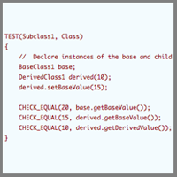
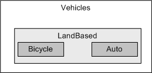
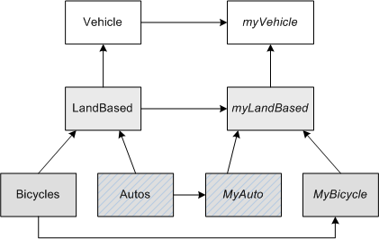
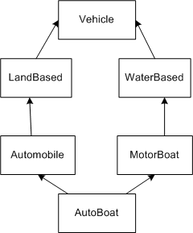
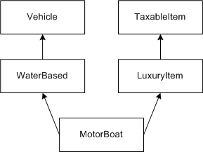
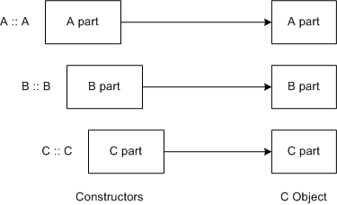
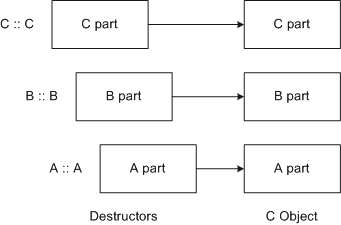
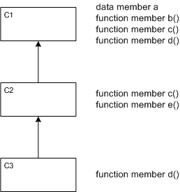
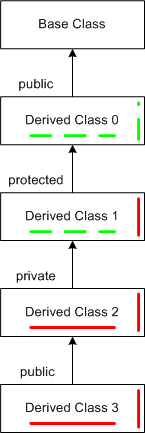

Lesson 8
 Extending the Language Through Inheritance—Part 1
Key Terms
- abstract data type (ADT)
- subclass or derived classes
- single inheritance
- multiple inheritance
- abstract super class or abstract base class (ABC)
- public derivation
- private derivation
- protected derivation
Data Abstraction and Abstract Data Types
An abstract data type (ADT) is an encapsulated data type that is accessible only through a well-defined interface. Its properties are defined by its interface, not by its internal structure or implementation. The same ADT can be implemented in different ways at different times; the change does not affect the client code that uses it. It is this sense that makes the data type abstract. Its properties are defined by its interface; the implementation details are abstracted away.
Data abstraction is an effective technique for extending a predefined type system when one has a single clearly defined concept such as complex number, string, or sorted collection. In other cases, an ADT is close to what is needed. If we have a collection of types similar in implementation and meaning, yet not identical, what do we do? We'll see that inheritance is a useful technique for augmenting data abstraction.
Inheritance
In C++, inheritance is a mechanism for building class types from other class types; that is, for defining new class types to be a specialization or augmentation of existing types. Inheritance is a familiar concept. We inherit characteristics, properties, and capabilities from our parents. In biology, we have
- kingdom
- phylum
- class
- order
- family
- genus
- species
- genus
- family
- order
- class
- phylum
Consider a vehicle hierarchy. At the top of the hierarchy, we have Vehicles. From these, among others, we derive LandBased Vehicles, and from these, we have Bicycles and Automobiles.
In C++ we use the class as a means of encapsulating data and functions shared by members of the class. In our Vehicle hierarchy, we see that each entity is also a class. Such subgroupings, with respect to a parent, are called subclasses or derived classes, yet each is still a class. The derived class inherits all the characteristics, properties, and capabilities of the parent. It can modify or extend the inherited abilities as it chooses to.
Observe that we actually have two hierarchies: one shows the classes (abstractions) and the second shows the instances (concrete). The instance hierarchy, we see, follows the class hierarchy.

Class and Instance Hierarchy
As we've noted, the instance hierarchy follows the class hierarchy. Such a hierarchy may take any one of several forms. The simplest is single inheritance. Each class or instance object has a single parent. LandBased Vehicle has two offspring, but each has only a single parent. Vehicle is a parent, or base, class; LandBased is a derived, or child, class.

In a multiple inheritance hierarchy, classes inherit from multiple base classes. Multiple inheritance thereby defines a relationship between several (independent) class types.
Consider the portion of the Vehicle hierarchy shown in figure 8.3. The derived class AutoBoat inherits attributes and properties from both Automobile and Motor Boat.
If we look at this hierarchy, we can see a potential problem with multiple inheritance. The derived class AutoBoat inherits attributes and properties from Automobile, Motor Boat, and Vehicle. Thus, it can inherit the same attribute from its various ancestors. Thus in this scenario we need to disambiguate between these attributes. C++ provides virtual inheritance to ensure that only a single copy of inherited members appears in the child. A better solution is to construct class heirarchies which avoid this problem entirely.
Below we see one case of multiple inheritance. Although at one level there are multiple parents, there is, as we see, also a common ancestor.

We can also have inheritance without a common parent. In this case, Motor Boat inherits from two independent classes: Vehicle and Taxable Item.
Inheritance without a Common Parent

Derivation Hierarchy
In the vehicle hierarchy, the class Vehicle is an abstraction. It represents an encapsulation of common properties and attributes. However, we cannot actually create an instance of a Vehicle. Its definition is incomplete. Each derived class adds something to the definition. Its sole purpose is to define a class from which to derive other classes. Such an encapsulation defines a common set of data members and function members. Subsequent derivations may modify the data and function members by refining them, adding new ones, or overriding the existing ones. Such a class is called an abstract super class or abstract base class (ABC).
Abstract Super Class
A key element in the derivation hierarchy is that all derived classes share a common set of class members inherited from an abstract super class (at the moment, we're talking about single inheritance). These members provide a common public interface to the class hierarchy.
If we look from the bottom up, an abstract super class can be created when two classes share part of their description. Neither is properly a subclass of the other. In such a case, we have created a mutual superclass that contains the shared aspects. It's not intended to have instances in the traditional sense; rather, it provides a means to hold common members.
C++ Class Derivation
Any class can serve as a base class, and thus a derived class can also be a base class. We can see, then, that it's worth spending time at the outset of a design to develop a sound definition. In C++, the class derivation specification is written as follows:
Syntax
class DerivedClassName : specification BaseClassName
DerivedClassName -the class being derived
specification - specifies access to the base class members
public
protected
private
- private by default
Let
class A be derived from base class B or C
class B be public
class C be private
We write
class A : public B
class A : private C
The meaning of the specification,
class A : public B
is: in class A, the inherited public members of B appear as public members of A. If myValue is a public data member of B, myValue can be accessed publicly through instances of A.
Declare an instance of class A:
A d; d.myValue; // ok
The specification
class A : private B
means in class A, the inherited public members of B appear as private members of A. If myValue is a public data member of B, myValue cannot be accessed publicly and directly through instances of A.
Declare an instance of class A:
A d; d.myValue; // compile error
Function members of A can still access public members of B as public.
Construction of an Instance of Type C

Deriving Objects
In a derivation hierarchy, objects are created from the inside out. Consider the class hierarchy,
class A { }
class B : public A { }
class C : public B { }
The compiler will build the A portion first, then the B, and will complete with the C part. This process is illustrated in figure 8.5.
Objects are destructed from the outside in. An instance of type C is destructed as we see in figure 8.6, below: first the C part, then the B, and finally the A subobject.
Destruction of an Instance of Type C

Let's look at an example of a public derivation with the initialization of the base and derived parts within the class declarations.
// Classes Derivation - Single Inheritance Example
// Simple Inheritance
class BaseClass1
{
public:
BaseClass1()
: baseValue(20)
{
}
int getBaseValue() const
{
return baseValue;
}
void setBaseValue(int aValue)
{
baseValue = aValue;
}
private:
int baseValue;
};
// A public derivation from BaseClass1
class DerivedClass1 : public BaseClass1
{
public:
DerivedClass1(int derivedValue)
: derivedValue(derivedValue)
{
}
int getDerivedValue() const
{
return derivedValue;
}
void setDerivedValue(int aValue)
{
derivedValue = aValue;
}
private:
int derivedValue;
};
TEST(Subclass1, Class)
{
// Declare instances of the base and child classes
BaseClass1 base;
DerivedClass1 derived(10);
derived.setBaseValue(15);
CHECK_EQUAL(20, base.getBaseValue());
CHECK_EQUAL(15, derived.getBaseValue());
CHECK_EQUAL(10, derived.getDerivedValue());
}
Derived Class Constructors and Destructors
Constructors and destructors are not inherited. Derived class initialization and deinitialization are implemented as series of base and derived class constructor calls. Different constructors and destructors collaborate to complete the tasks as we saw in the previous section. When a derived object is instantiated, memory is allocated for the base object and the added parts.
Initialization occurs in two stages: the base class constructors are invoked to initialize the base objects, and the derived class constructor is used to complete the task. The derived class constructor specifies the appropriate base class constructor in the initialization list. If there is no constructor in the base class, the compiler-created default constructor is used. If the base class is derived, the procedure is applied recursively.
Inherited Member Initialization
To initialize member data in a base class, chain a call to the appropriate base class constructor within the derived class constructor's initializer list. For example:
Single Base Class
DerivedClass(derivedClass args) : BaseClass (baseClass args)
{
DerivedClass constructor body
}
The set of derived class constructor arguments may contain initialization values for the base class arguments.
Simple Public Derivation
The example below shows how to use the initialization list to initialize base class members to a default value or to one that is passed in.
// Classes Derivation - Single Inheritance Example
// Chaining base class constructors to derived classes constructors
class BaseClass2
{
public:
BaseClass2(int value)
: baseValue(value)
{
}
int getBaseValue() const
{
return baseValue;
}
private:
int baseValue;
};
// A public derivation from BaseClass2
class DerivedClass2 : public BaseClass2
{
public:
DerivedClass2(int baseValue, int derivedValue)
: BaseClass2(baseValue),
derivedValue(derivedValue)
{
}
int getDerivedValue()
{
return derivedValue;
}
void setDerivedValue(int aValue)
{
derivedValue = aValue;
}
private:
int derivedValue;
};
TEST(Subclass2, Class)
{
// Declare instances of the base and child classes
BaseClass2 base(20);
DerivedClass2 derived(15, 10);
CHECK_EQUAL(20, base.getBaseValue());
CHECK_EQUAL(15, derived.getBaseValue());
CHECK_EQUAL(10, derived.getDerivedValue());
}
Simple Public Derivation
The example below shows how to use the initialization list to initialize the base class—doing the initializing on definition.
// Classes Derivation - Single Inheritance Example
// Simple Inheritance - Base Class Initialization
class BaseClass3
{
public:
BaseClass3(int aValue = 20)
: baseValue(aValue)
{
}
int getBaseValue() const
{
return baseValue;
}
private:
int baseValue;
};
class DerivedClass3 : public BaseClass3
{
public:
// Declare several different constructors
// Use default or passed in value for derived
// member initialization. Use default for base
DerivedClass3(int aDerivedValue = 10);
// Pass in value for base and derived
// member initialization
DerivedClass3(int aDerivedValue, int aBaseValue);
int getDerivedValue() const
{
return derivedValue;
}
void setDerivedValue(int aValue)
{
derivedValue = aValue;
}
private:
int derivedValue;
};
// The constructor for DerivedClass3 is used
// to initialize the data member baseValue
// of the base class to the constant value 15.
DerivedClass3::DerivedClass3(int aValue):BaseClass3(15)
{
derivedValue = aValue;
}
// The constructor for DerivedClass3 is used
// to initialize the datamember baseValue of
// the base class by chaining the BaseClass3 constructor to the DerivedClass3 constructor.
//
// This value is passed in as an argument of
// the derived class constructor
DerivedClass3::DerivedClass3(int aValue, int aBaseValue)
: BaseClass3(aBaseValue),
derivedValue(aValue)
{
}
TEST(Subclass3, Class)
{
BaseClass3 base;
// 5 initializes the instance of the
// Derived Class and 35 initializes the
// data member inherited from the base class
DerivedClass3 child(5, 35);
CHECK_EQUAL(20, base.getBaseValue());
CHECK_EQUAL(35, child.getBaseValue());
CHECK_EQUAL(5, child.getDerivedValue());
}
Simple Public Derivation
The example below shows using initialization list to initialize base and derived class to default values or to ones that are passed in.
// Classes Derivation - Single Inheritance Example
// Simple Inheritance - Default Initialization
class BaseClass4
{
public:
BaseClass4(int aValue = 20)
: baseValue(aValue)
{
}
int getBaseValue() const
{
return baseValue;
}
private:
int baseValue;
};
class DerivedClass4 : public BaseClass4
{
public:
DerivedClass4();
DerivedClass4(int aValue);
int getDerivedValue() const
{
return derivedValue;
}
void setDerivedValue(int aValue)
{
derivedValue = aValue;
}
private:
int derivedValue;
};
// The constructor for DerivedClass4 is used
// to supply default values to initialize the
// DerivedClass4 and CaseClass data members.
// Note the default constructor has no body.
DerivedClass4::DerivedClass4() : derivedValue(15), BaseClass4(10)
{
};
TEST(Subclass4, Class)
{
BaseClass4 base;
DerivedClass4 child;
CHECK_EQUAL(20, base.getBaseValue());
CHECK_EQUAL(10, child.getBaseValue());
CHECK_EQUAL(15, child.getDerivedValue());
}
Simple Public Derivation
The example below illustrates the initialization chain within a class hierarchy.
// Classes Derivation - Single Inheritance Example
// Simple Inheritance - Default Initialization
// Inheritance / Initialization Chain
class BaseClass5
{
public:
BaseClass5()
{
baseValue = 0;
}
BaseClass5(int aValue)
{
}
int getBaseValue() const
{
return baseValue;
}
private:
int baseValue;
};
// DerivedClass5 publicly inherits from BaseClass5
class DerivedClass5 : public BaseClass5
{
public:
DerivedClass5();
DerivedClass5(int aValue)
{
derivedValue1 = aValue;
}
int getDerivedValue1() const
{
return derivedValue1;
}
private:
int derivedValue1;
};
// DerivedClass6 publicly inherits from
// DerivedClass5
class DerivedClass6 : public DerivedClass5
{
public:
DerivedClass6();
DerivedClass6(int aValue)
{
derivedValue2 = aValue;
}
int getDerivedValue2() const
{
return derivedValue2;
}
private:
int derivedValue2;
};
// Default initializatoin of declared
// and inherited data members of instances
// of DerivedClass5
DerivedClass5::DerivedClass5() : derivedValue1(11), BaseClass5(1)
{
}
// Default initialization of declared
// and inherited data members of
// instances of DerivedClass6
DerivedClass6::DerivedClass6() : derivedValue2(21),
DerivedClass5(12)
{
}
TEST(Subclass5, Class)
{
BaseClass5 base;
DerivedClass6 child;
CHECK_EQUAL(0, base.getBaseValue());
CHECK_EQUAL(0, child.getBaseValue());
CHECK_EQUAL(12, child.getDerivedValue1());
CHECK_EQUAL(21, child.getDerivedValue2());
}
Member Access Under Derivation
We've seen that we use the base class to define the behaviors common to all classes within a hierarchy. There may be occasions, however, when a derived class needs to make slight changes to the inherited functionality. What do we do under such circumstances?
The derived class can mask an inherited member overriding it. When we override a function, we use the same name and signature, but change the function body. Recall from our earlier discussions, overloading keeps the name, but changes the signature. We can override a data member simply by declaring a local data member with the same name.
Let's look now at how class members are accessed, particularly if a derived class overrides one of its parents' members. We'll use the three-class hierarchy shown in the figure below.
A Three-Class Hierarchy

- C1
- Defines the base class members
- Function
- Data
- Defines the base class members
- C2
- Overrides c ( )
- Defines e ( )
- C3
- Overrides d ( )
If an instance of class C3 accesses the data member a, it will start with itself, won't find it, will go to C2, have no luck, then will go to C1, where it will find the value. The same process is followed for each of the other members as we see in Table.
a self c2 c1 b self c2 c1 c self c2 d self e self c2 |
In Example below, we override an inherited member to alter its behavior in a derived class.
// Classes Derivation - Single Inheritance Example
// Simple Inheritance - Member Over riding
class BaseClass7
{
public:
BaseClass7()
: baseValue0(20),
baseValue1(30)
{
}
int baseFunction() const
{
return 15;
}
int getBaseValue0() const
{
return baseValue0;
}
int getBaseValue1() const
{
return baseValue1;
}
private:
int baseValue0;
int baseValue1;
};
// Instances of Derived Class mask the return
// value of the inherited inherited function:
// baseFunction().
class DerivedClass7 : public BaseClass7
{
public:
DerivedClass7()
: derivedValue(10)
{
}
// Masking a base class member function is a bad idea.
// This makes the object behave differently when we access via
// a base class pointer.
// We'll learn the right way to do this later in the course
// with polymorphic (i.e., virtual) functions.
int baseFunction() const
{
return 27;
}
// Access DerivedClass7
int getDerivedValue() const
{
return derivedValue;
}
void setDerivedValue(int aValue)
{
derivedValue = aValue;
}
private:
int derivedValue;
};
TEST(Subclass7, Class)
{
BaseClass7 base;
DerivedClass7 child;
CHECK_EQUAL(20, base.getBaseValue0());
CHECK_EQUAL(20, child.getBaseValue0());
CHECK_EQUAL(15, base.baseFunction());
CHECK_EQUAL(10, child.getDerivedValue());
// Call member function through derived class
CHECK_EQUAL(27, child.baseFunction());
// Call member function through base class reference
// and we get a different result. This is because we've
// masked the base class method with a derived class method.
//
BaseClass7& baseRef = child;
CHECK_EQUAL(15, baseRef.baseFunction());
// For now avoid masking as we want the same result regardless
// of whether we access through the derived class or via a base
// class reference.
//
// Later we'll learn how to use polymorphism to help
// us with this.
}
The following rules govern member access within a class hierarchy under derivation.
- Access to inherited members by derived members and friends is independent of the base class designation in the derivation specification.
- Access is allowed to all non-private inherited members
- Access is not allowed to private members (of the parent)
- Access to inherited members by functions outside the derivation hierarchy is driven by the base class designation in the derivation specification. If the specification is
- public: public members remain public and protected members remain protected.
- protected: inherited non-private members accessible as protected
- private: no outside access
- Overriding—An inherited member that is normally visible can be masked
- Define a derived class member with the same name
- This is not good practice with non-virtual functions (we'll talk about these in the next lesson).
Let's use a picture to see how this works. In this derivation, we'll only talk about public class members. In the figure below, we use red (solid) and green (dashed) bars to depict the visibility of public members inherited from the Base Class.
Member Access within a Class Hierarchy under Derivation

Observe in Derived Class 1 that the protected derivation blocks are outside the visibility of inherited members--yet they remain visible within the hierarchy. The private derivation of Derived Class 2 shuts off any further visibility of the inherited Base Class members even though Derived Class 3 is designated public. Derived Class 2 will have to provide an access function if one of the subsequently derived classes wishes to access any of the inherited Base Class members.
Derivation Guidelines
- Derivation is not always the best way to extend the system.
- Use public derivation when the derived object is a kind of base class.
- Use private derivation when the derived object is not a kind of base class but derivation makes code development easier.
Base Class Member Access Specification Guidelines
Classes designed as base classes are the same as ordinary classes. You should declare function and data members intended to be inherited but not intended to be public as protected, and declare function members intended to be implemented by derived classes as virtual. (We'll discuss this in the last lesson.)
Member Layout
In an earlier lesson, we saw how single classes appeared in memory. Let's see what happens under inheritance. Consider the classes shown in the table below.
Single Inheritance
struct A
{
int a1;
void af();
};
|
struct B : A
{
int b1;
void bf1();
};
|
As we saw earlier, an A pointer, A*, points to the starting address of the the A instance. If we derive struct B from A, then a B* points to the start of the B instance while A* points to the start of the A part. See Example 8.7, below.
Multiple Inheritance
struct C
{
int c1;
void cf ( );
};
|
struct D : A, C
{
int d1;
void df1 ( );
};
|
For the case of multiple inheritance, a D* points to the start of the object, an A* identifies the A part, and a C* points to the C part. See Example 8.8, below.
Summary
We have begun to look at inheritance, or class derivation, as another tool for developing reusable designs. We looked at the concept of abstraction and then class hierarchies and the idea of derivation. We introduced the idea of abstract classes and discussed their purpose when designing a class hierarchy. Finally, we saw how to implement and use information hiding and encapsulation within a derivation hierarchy.
Practice Questions
Test your understanding of the concepts in Lesson 8 by working through the following practice questions, then check your answers with Answers to Practice Questions for Lesson 8.
- What is a inheritance in C++?
- What is the difference between a class hierarchy and an instance hierarchy?
- What is an ABC?
- What does the derivation specification class A : protected B mean?
- How are base and derived class constructors and destructors invoked?